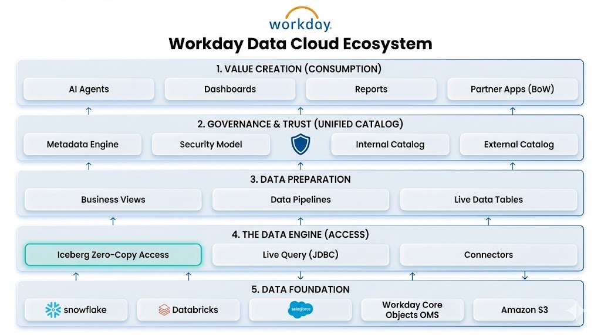
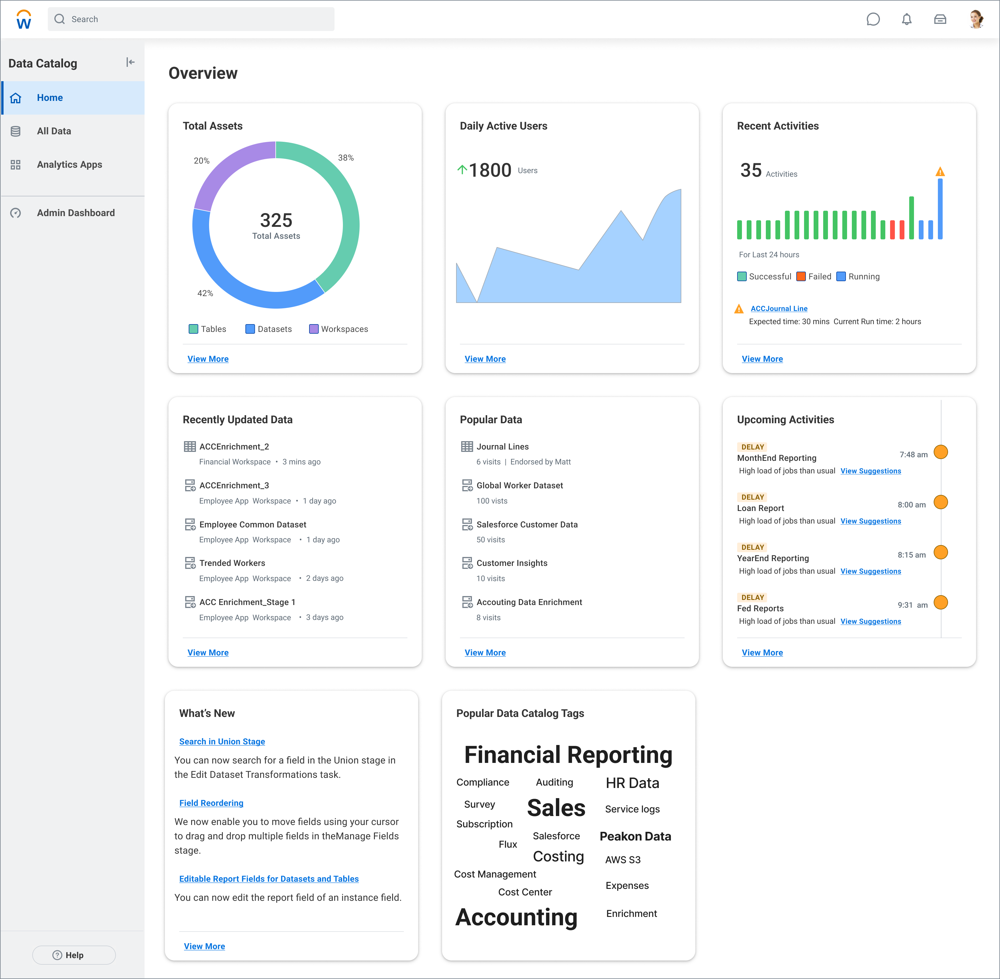

Workday Data Catalog Redesign
Empowering Workday platform with a bi-directional flow of insights at scale
Product Design Leadership

Overview
As Workday evolved its data platform to support AI-driven decision-making and zero-copy data architectures, the existing Prism data catalog needed a fundamental redesign. With three major strategic shifts converging—external Iceberg integration, real-time data preparation, and partner-built applications—users were struggling with organization, discoverability, and understanding new data paradigms.
The Challenge
Platform Evolution: Workday Data Cloud
Workday was launching Workday Data Cloud, a strategic platform evolution that fundamentally changes how customers access their people and money data. Instead of complex ETL processes, it enables bi-directional zero-copy data access—allowing customers to query data in-place without physically moving or copying it.
The platform combines four key components:
Workday Data Lake - Governed access to curated Workday business objects
- Workday Data Connect: Zero-copy access between Workday and external platforms (Snowflake, Databricks, Salesforce) via Apache Iceberg
- Unified Data Catalog: Simplified catalog of Workday's primary business objects (Worker, HCM, Recruiting, Learning, with Finance and Payroll coming later)
Workday Live Data Query - Direct, real-time SQL access to Workday core objects via JDBC for transactional reads
Prism's Data Management Tools - Existing integration toolset enhanced with inbound zero-copy queries from external platforms
The UX Problem
While Workday Data Cloud promised to eliminate costly data extraction processes, the catalog interface couldn't support this new paradigm. Users were facing:
- Terminology confusion between materialized data (traditional Prism) and zero-copy live queries
- Organizational chaos with 300-1000+ assets and no hierarchy for external vs. internal catalogs
- Discoverability failures causing work duplication as users couldn't find existing content
- No IP segregation for the growing ecosystem of partners building on the platform
Business Impact
Strategic Imperative
This wasn't just a UI refresh—Workday Data Cloud was a key element of Workday Build, the company's initiative to empower customers and partners to build data-driven applications and accelerate AI innovation. The catalog needed to:
- Support external Iceberg integration with major platforms (Snowflake, Salesforce, Databricks)
- Enable real-time reporting through Unified Data Prep Views
- Protect Partner IP while allowing collaboration
- Scale to thousands of data assets across multiple catalogs
User Pain Points
- Customers spending excessive time searching before duplicating existing datasets
- Data engineers confused by overlapping terminology (Live Data Pipeline, Live Query, Prism Derived Dataset)
- Administrators unable to segregate partner-created vs. customer-created content
- System analysts lacking metadata filtering to narrow down relevant assets
Research Approach
Target Users
I focused on three distinct personas with different catalog needs:
- Nina (System Analyst) - Searches existing content, creates exploratory datasets, needs clear folder structures
- Brandon (Data Engineer) - Creates pipelines and curates data assets end-to-end, works across internal and external catalogs
- Franklin (Administrator) - Manages users, security, workspaces, and monitors catalog limits across the expanding ecosystem
Phase 1: Discovery
- Conducted user interviews to understand mental models around zero-copy vs. materialized data
- Analyzed usage patterns across customers with 300-1000+ assets
- Mapped terminology confusion: users couldn't distinguish between Data Connect (external Iceberg), Live Query (real-time JDBC), and traditional Prism tables
Phase 2: Information Architecture
- Card sorting studies to establish optimal organization for multiple catalog types (Internal, External, Unified)
- Evaluated how users conceptualized: Derived Datasets (Live), External Tables, Prism Tables, Workday Data Lake objects
- Tested workspace segregation models for partner vs. customer content in BOW (Built on Workday) applications
Phase 3: Validation
- Prototype testing for advanced search and metadata filtering across catalog types
- Usability testing for personalization features (Recents, Favorites, custom columns)
- Tested terminology with business users to ensure "zero-copy" was understandable
Key Insights
1. The Zero-Copy Mental Model Gap
Users understood what zero-copy promised (no data movement) but not how to work with it:
- Couldn't distinguish when they were querying Workday Data Connect (external Iceberg) vs. Live Query (real-time JDBC) vs. Prism (materialized)
- Each method had different performance, freshness, and security implications
- Technical terminology (Apache Iceberg, JDBC, materialization) didn't map to user workflows
Impact: Created user-facing language distinguishing "Live External Data" (Data Connect), "Real-Time Workday Data" (Live Query), and "Prepared Datasets" (Prism)
2. Catalog Proliferation Without Hierarchy
Workday Data Cloud introduced multiple catalog types simultaneously:
- Unified Data Catalog (curated Workday objects)
- External Catalogs (Snowflake, Databricks, Salesforce via Iceberg)
- Internal Catalog (traditional Prism materialized data)
At 300+ assets, users couldn't navigate this complexity. The flat structure made it impossible to understand where data lived and how to access it.
Impact: Designed hierarchical workspace structure with clear visual indicators for catalog type and data freshness
3. Discovery Requires Multi-Dimensional Filtering
With Data Cloud expanding the data universe, users needed to filter by:
- Catalog Source (Unified Data Catalog, Snowflake, Databricks, Prism)
- Artifact Type (Dataset, Table, Connection, Live Query, External Table)
- Data Freshness (Real-time, Near real-time, Scheduled refresh)
- Column properties and custom metadata
Single-keyword search was insufficient for this complexity.
Impact: Specified advanced search with faceted filtering and saved search states
4. Partner IP Segregation Missing
Built on Workday (BOW) partners were building applications on Prism, but there was no mechanism to:
- Separate partner-created artifacts from customer-created content
- Control visibility and permissions at the workspace level
- Provide partners with dedicated development environments
This blocked the partner ecosystem strategy.
Impact: Prioritized workspace redesign with role-based access control and IP boundaries
Design Recommendations
1. Unified Navigation Framework
- Three-tier hierarchy: Catalogs → Workspaces → Folders
- Visual distinction for catalog types (Unified/Internal/External) and data paradigms (Live/Prepared)
- Workspace segregation supporting partner IP protection and team collaboration
2. Terminology Standards for Zero-Copy
Customer-facing language bridging technical architecture with user understanding:
- "Live External Data" (Workday Data Connect/Iceberg) → for external platform queries
- "Real-Time Workday Data" (Live Query) → for fresh JDBC access
- "Prepared Datasets" (Prism materialized) → for pre-processed analytics
- "Workday Core Objects" (Unified Data Catalog) → for curated business objects
3. Advanced Discovery System
- Multi-faceted filtering by catalog source, artifact type, data freshness, and custom properties
- Keyword search across field descriptions linking related datasets, tables, and reports
- Customizable column views tailored to user roles (analyst vs. engineer vs. admin)
4. Personalization & Context Preservation
- Recents and Favorites scoped by catalog and workspace
- Saved search filters for common queries (e.g., "all real-time Finance objects")
- Workspace bookmarking for active projects across multiple catalogs
Impact & Outcomes
Immediate
- Informed Workday Data Cloud GA roadmap for launch in 26R2
- Established IA framework supporting Unified Data Catalog and external Iceberg integration
- Created terminology standards adopted across Platform & Technology and customer documentation
Platform Adoption
- Reduced onboarding friction for customers adopting zero-copy architecture
- Enabled partner ecosystem growth with clear IP segregation in BOW applications
- Improved discoverability reducing data asset duplication and redundant ETL processes
Business Value
- Accelerated AI innovation through unified access to Workday and external data
- Eliminated costly ETL by supporting in-place querying across platforms
- Positioned catalog to scale beyond 1000+ assets as customers connect multiple external platforms
Reflection
This project required solving a fundamental UX challenge: how do you make zero-copy data architecture understandable to business users? The technical benefits (no data movement, real-time freshness, cost reduction) were clear, but users needed to understand when to use Data Connect vs. Live Query vs. Prism for their specific use case.
The breakthrough came from reframing the problem: instead of explaining how each technology works (Apache Iceberg, JDBC, materialization), we focused on what users are trying to accomplish—accessing fresh external data, querying real-time Workday objects, or analyzing prepared datasets. This user-centered language unlocked both the terminology framework and the navigation structure.
The research also revealed that organization and terminology are inseparable: users couldn't organize catalogs they didn't understand. By solving both problems together—creating clear language and hierarchical structure—we enabled customers to confidently adopt Workday Data Cloud.
If I were to continue this work, I'd focus on:
- Longitudinal studies tracking how users' mental models evolve as they adopt zero-copy workflows
- Measuring duplication reduction after implementing advanced discovery
- Partner feedback on IP segregation effectiveness as the BOW ecosystem scales
Images
Visual artifacts from the Data Catalog Redesign project:
